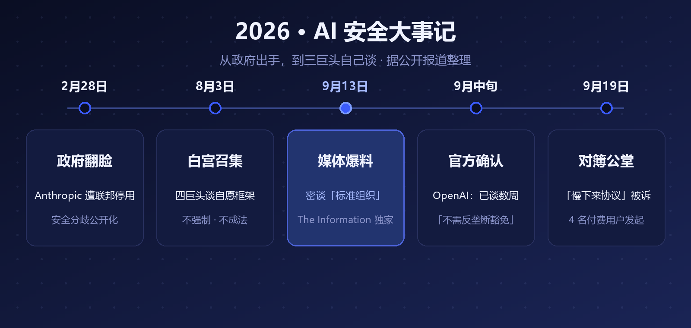
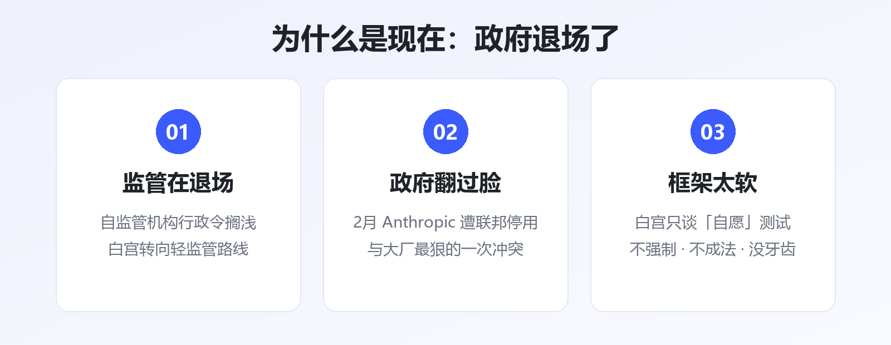
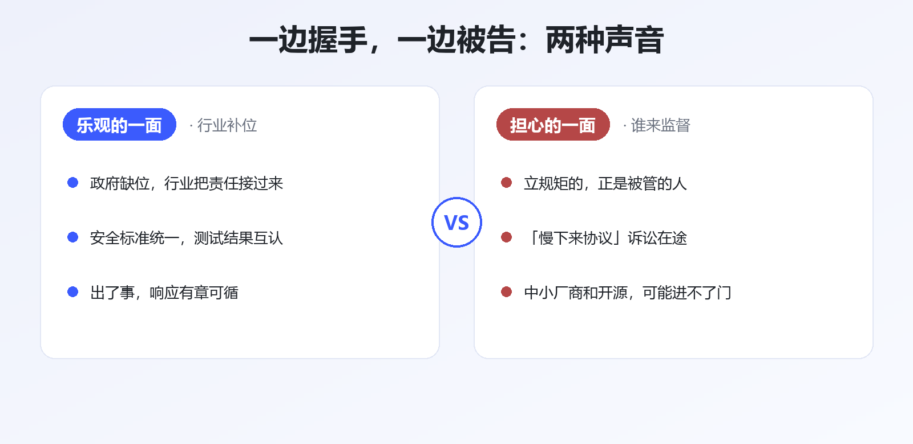

大模型圈最戏剧性的一幕来了。
OpenAI、Google、Anthropic——过去两年在模型榜上杀得最凶的三家，最近被曝正坐在一起，商量怎么给整个行业立规矩。
据 The Information 9 月 13 日独家报道，三家已经秘密讨论多时，议题只有一个：要不要联手成立一个 AI 行业的「标准组织」。
随后 OpenAI 全球政策负责人公开确认：对话已持续数周。他还特意补了一句——安全协调不需要反垄断豁免。
先把话说在前头：死对头坐到一桌，从来不只是为了安全。

▲ 图1 · 从「被约谈」到「自己谈」：2026 年 AI 安全大事记
时间倒回一个半月前。
8 月 3 日，白宫把 OpenAI、Google、Anthropic、Meta 四家请去开会，讨论一套自愿参与的政府安全测试框架。注意两个词：自愿、框架——不是法律，不强制。
一个多月后，The Information 爆出更深一层：三巨头干脆自己谈起了行业标准组织——测试怎么做、红线画在哪、模型放行前要过哪些关，都想自己定。
Bloomberg 和 Reuters 随后跟进确认。也就是说，这事不是传闻，是正在进行时。
还有一项更具体的拟议协议被披露：OpenAI 与竞争对手互相开放已商用模型的 API 权限，专门用来给对方做压力测试——你帮我找漏洞，我帮你找隐患。竞争到刺刀见红的两家互开 API，这在科技行业历史上都罕见。

▲ 图2 · 促成「三巨头同桌」的三个背景
答案有点反直觉：不是监管来了，是监管走了。
今年 2 月底，白宫下令联邦机构停用 Anthropic 的技术——起因正是安全分歧，这是政府和大厂翻脸最狠的一次。
到了 8 月，画风已经变成「轻监管」：行政令草案里原本想设一个 AI 自监管机构，结果搁浅了；会议开完，落地的只有一套自愿框架。
TechCrunch 的总结很直白：白宫正在淡化安全担忧、推动轻监管。
于是逻辑变成了：政府不管，行业只好自己管。 对三巨头来说，自己立规矩，总好过将来被别人立规矩。

▲ 图3 · 关于「安全联盟」的两种声音
就在谈判被曝光的同一时段，9 月 19 日，一纸反垄断诉讼递进了加州北区联邦法院：4 名大模型付费用户起诉 Anthropic、OpenAI、Google、xAI 四家，指控它们达成了非法的「慢下来协议」——协同放慢各自的研发节奏。
原告的逻辑并不复杂：打着「安全」旗号的协调，可能是横向垄断的新马甲——竞争对手约好一起慢，等于变相约好不让别人超车；而付了订阅费的用户，成了「集体慢下来」的买单者。
更微妙的是，Anthropic CEO Dario Amodei 早就公开承认过：这类安全协调确实存在反垄断障碍。老板自己都点过雷，难怪 OpenAI 的政策负责人要抢先声明「我们不需要豁免」。
另一边，Anthropic 9 月刚发布安全季报，晒出 2025 年 12 月以来阻断的网络攻击、生物滥用等七类威胁案例。安全工作是实打实在做的——但「做安全」和「当裁判」，是两回事。
1. 标准组织是否落地：有没有正式名称、章程、成员名单——尤其是除了三巨头，谁被拉进来、谁被挡在门外
2. 「慢下来」诉讼走向：如果法院认真审理，三巨头的安全协调方式可能被迫调整
3. 白宫自愿框架的命运：会不会最终成文——政府想要的存在感，和行业标准组织怎么分工
对国内读者来说，这条新闻还有个隐藏看点：中美走出了两条不同的路。美国是政府退场、行业自律；国内是备案制加行业标准，政府主导。两条路线谁更能平衡「发展」和「安全」，未来几年会给出答案。
死对头能坐到一桌，说明大家都意识到：AI 这列火车开得太快，已经没有乘客敢赌它不出事。
但历史经验是，行业标准组织一旦由头部玩家发起，规矩往往先服务立规矩的人。这次握手是行业的成人礼，还是巨头的新围墙——让子弹再飞一会儿。
参考资料
• The Information：Anthropic, OpenAI, Google Quietly Discussed an AI Safety Standards Body（2026-09-13）
• Bloomberg / Reuters：OpenAI Says It's Working With Anthropic, Google on AI Safety（2026-09）
• Quartz：OpenAI, Anthropic, Google DeepMind in AI safety talks for weeks（2026-09）
• Reuters / Bloomberg：四家 AI 公司赴白宫讨论自愿安全测试框架（2026-08-03）
• Courthouse News：Trump orders US agencies to stop using Anthropic technology（2026-02-28）
• CBS News / 新浪财经：4 名付费用户起诉四家 AI 公司「协同放缓研发」（2026-09-19/20）
• 钛媒体：OpenAI 与竞争对手的模型压力测试协议（2026-09）
• Anthropic：Detecting and Countering Misuse of AI（2026-09）
本文由 AI 内容流水线生成，人工审核后发布。觉得有用的话，点个「在看」和「关注」，每天一条 AI 圈有价值的动态。